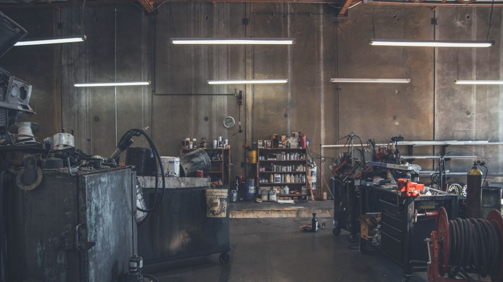

CQ-2608-114
| รายการ | อะไหล่ | ค่าแรง |
|---|---|---|
| ผ้าเบรกหน้า (คู่) | 1,850 | 400 |
| เจียจานเบรกหน้า 2 ใบ | — | 600 |
| น้ำมันเบรก DOT4 + ไล่ลม | 420 | 350 |
| ทำความสะอาด/อัดจารบีสลักคาลิเปอร์ | — | 250 |
| รวมค่าอะไหล่ | 2,270 | |
| รวมค่าแรง | 1,600 | |
| รวมทั้งสิ้น | 3,870 | |
อู่ซ่อมรถยนต์ · บางนา กม.4 · จันทร์–เสาร์ 08:30–18:00
ทุกคันที่เข้ามาได้ ใบตรวจ 30 จุด กับ ใบเสนอราคา ก่อนช่างลงมือ งานที่ไม่ได้อยู่ในใบนั้น เราโทรถามก่อนทุกครั้ง — ไม่มีบิลที่คุณไม่เคยเห็น
01 — ราคาก่อนแตะรถ
ใบด้านขวาเป็นตัวอย่างจากงานเบรกหน้าคันหนึ่ง ตัวเลขในใบเป็นข้อมูลสาธิต
CQ-2608-114
| รายการ | อะไหล่ | ค่าแรง |
|---|---|---|
| ผ้าเบรกหน้า (คู่) | 1,850 | 400 |
| เจียจานเบรกหน้า 2 ใบ | — | 600 |
| น้ำมันเบรก DOT4 + ไล่ลม | 420 | 350 |
| ทำความสะอาด/อัดจารบีสลักคาลิเปอร์ | — | 250 |
| รวมค่าอะไหล่ | 2,270 | |
| รวมค่าแรง | 1,600 | |
| รวมทั้งสิ้น | 3,870 | |
02 — บอกอาการ ดูราคา
ไม่ต้องโทรมาถามก่อนก็ได้ เลือกอาการที่ตรงที่สุดกับรถคุณ แล้วดูช่วงราคากับเวลาที่ต้องจอด ตัวเลขนี้คือช่วงที่งานแบบนี้จบจริงในอู่ ไม่ใช่ราคาล่อให้เข้ามา
03 — ใบตรวจ 30 จุด
คุณเลือกซ่อมเฉพาะแถวสีแดงก็ได้ แถวเหลืองเราจดไว้ให้ว่าอีกกี่กิโลค่อยกลับมา อู่ที่บอกว่า "ต้องเปลี่ยนทั้งหมด" คืออู่ที่ไม่ได้แยกสามสีนี้ให้คุณดู
24 ผ่าน 4 ควรดูรอบหน้า 2 ต้องซ่อมวันนี้
แสดง 9 จาก 30 แถว — ใบจริงส่งเป็นไฟล์พร้อมรูปถ่ายรายจุดทางไลน์

04 — สถานะรถ
ทุกครั้งที่รถขยับขั้น ระบบส่งไลน์หาคุณพร้อมรูป นี่คือหน้าสถานะของคันตัวอย่าง ทะเบียน 3กษ 4412 ที่เข้ามาเมื่อเช้า
08:40
รับรถ + ถ่ายรูปรอบคัน
ถ่าย 12 รูปเก็บสภาพก่อนเข้าอู่ ป้องกันเถียงกันทีหลังว่ารอยนี้มีมาก่อนไหม
08:55
ตรวจ 30 จุด
ยกขึ้นลิฟต์ ตรวจตามใบเช็ค พร้อมถ่ายรูปทุกจุดที่ไม่ผ่าน
09:05
ส่งใบราคาให้ดู
ส่งทางไลน์ แยกค่าแรง/ค่าอะไหล่ทุกบรรทัด
09:12
รอคุณกดอนุมัติ ตอนนี้อยู่ขั้นนี้
ช่างยังไม่แตะอะไรทั้งนั้นจนกว่าจะได้คำตอบ อนุมัติเฉพาะบางรายการก็ได้
—
ลงมือซ่อม
อะไหล่ที่ถอดออกเก็บใส่ถุงไว้ให้ดูทุกชิ้น
—
ทดลองวิ่ง แล้วส่งมอบ
วิ่งทดสอบก่อนคืนรถทุกคัน แล้วส่งใบตรวจหลังซ่อมให้อีกใบ
05 — อะไหล่
อู่ที่ใส่ของเทียบแล้วคิดราคาของแท้คือปัญหาที่คนกลัวที่สุดเรื่องอะไหล่ เราเขียนไว้ในใบราคาทุกครั้งว่าบรรทัดนั้นเป็นของอะไร และเก็บกล่องอะไหล่ไว้ให้ดูตอนรับรถ
| หัวข้อ | แท้ศูนย์ | OEM | เทียบ |
|---|---|---|---|
| ใครผลิต | ผู้ผลิตเดิม กล่องแบรนด์รถ | ผู้ผลิตเดิม กล่องแบรนด์ตัวเอง | โรงงานอื่น |
| ราคาโดยประมาณ | 3,200–4,500 | 1,600–2,400 | 700–1,400 |
| อายุที่เจอจริง | 35–45k กม. | 30–40k กม. | 15–25k กม. |
| รับประกันของ | ตามศูนย์ | 12 เดือน | 3–6 เดือน |
| เหมาะกับใคร | รถยังอยู่ในประกัน / อยากได้เหมือนเดิมเป๊ะ | ใช้ยาว คุ้มที่สุดในสามตัว | รถกำลังจะขาย / งบจำกัดจริงๆ |
ตัวเลขเป็นช่วงจากงานที่ทำบ่อย ใช้เป็นตัวอย่างประกอบเดโม ไม่ใช่ราคายืนของร้าน
06 — รับประกันงานซ่อม
เขียนข้อยกเว้นไว้ตั้งแต่แรก เพราะ "รับประกันทุกอย่าง" คือประโยคที่จบด้วยการเถียงกันหน้าเคาน์เตอร์
07 — นัดเข้าอู่